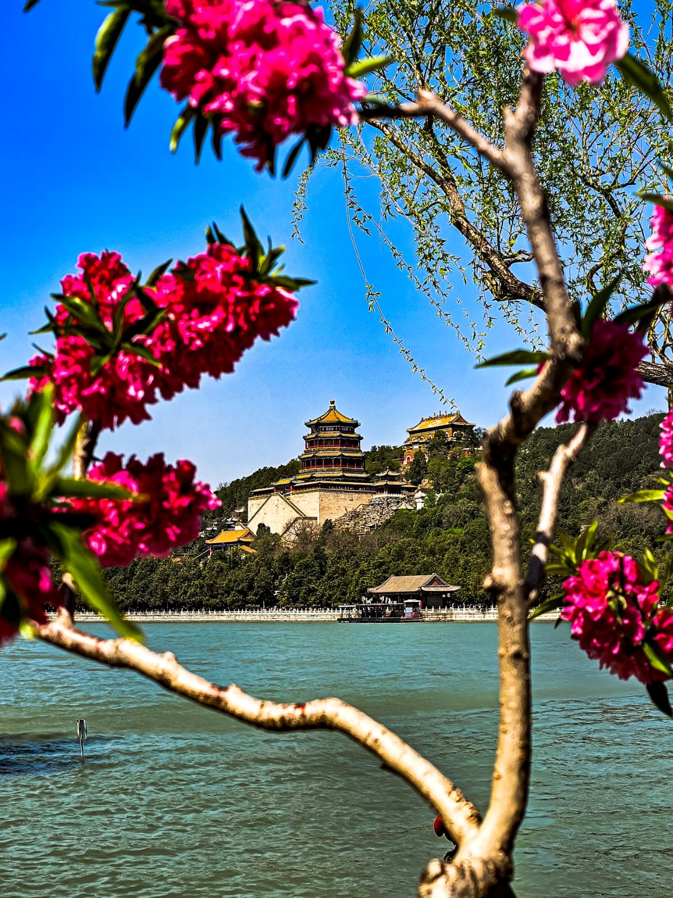
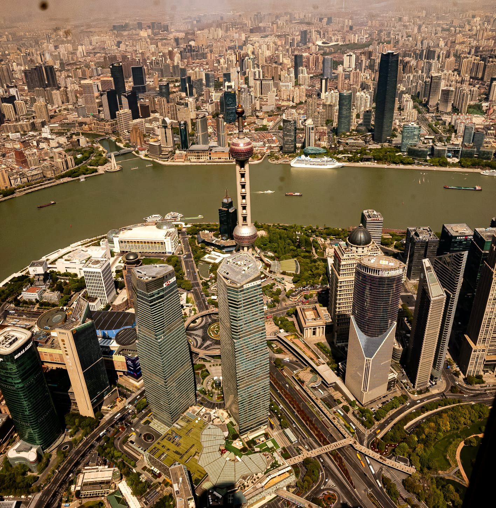
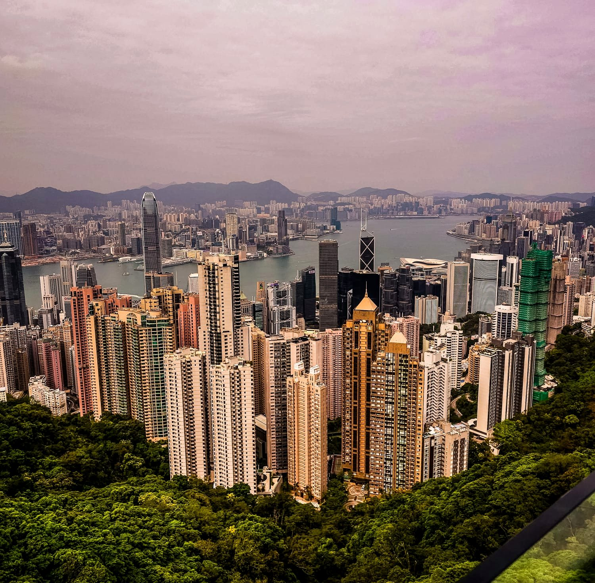
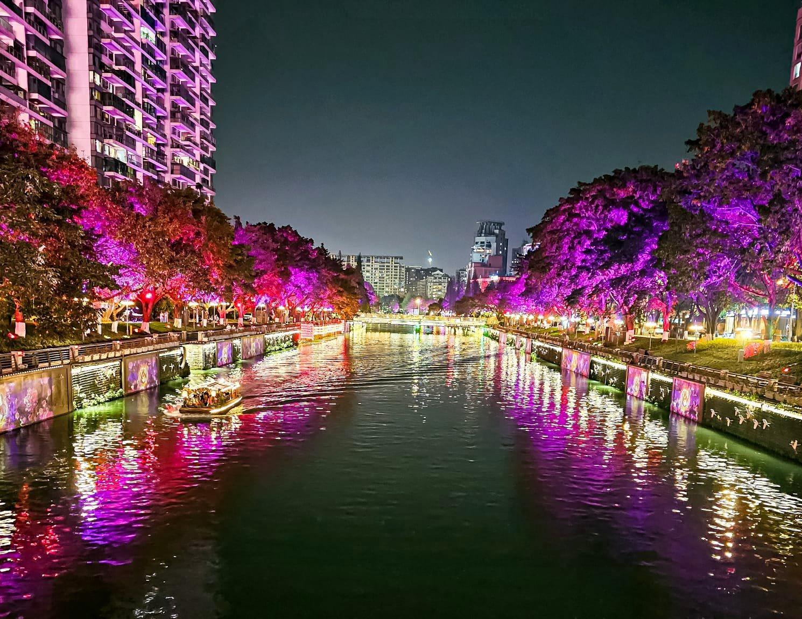
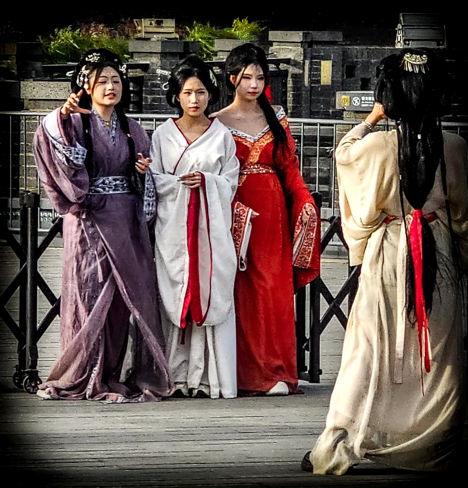
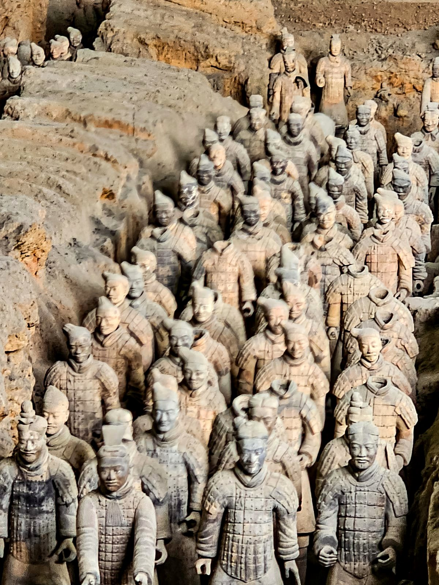
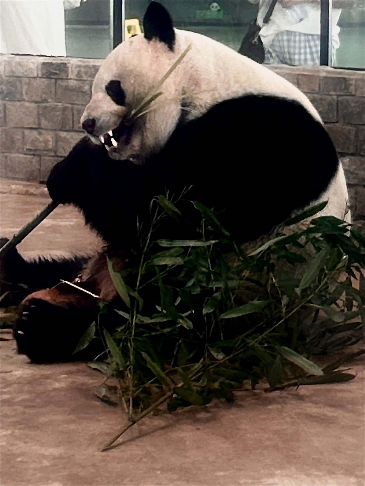
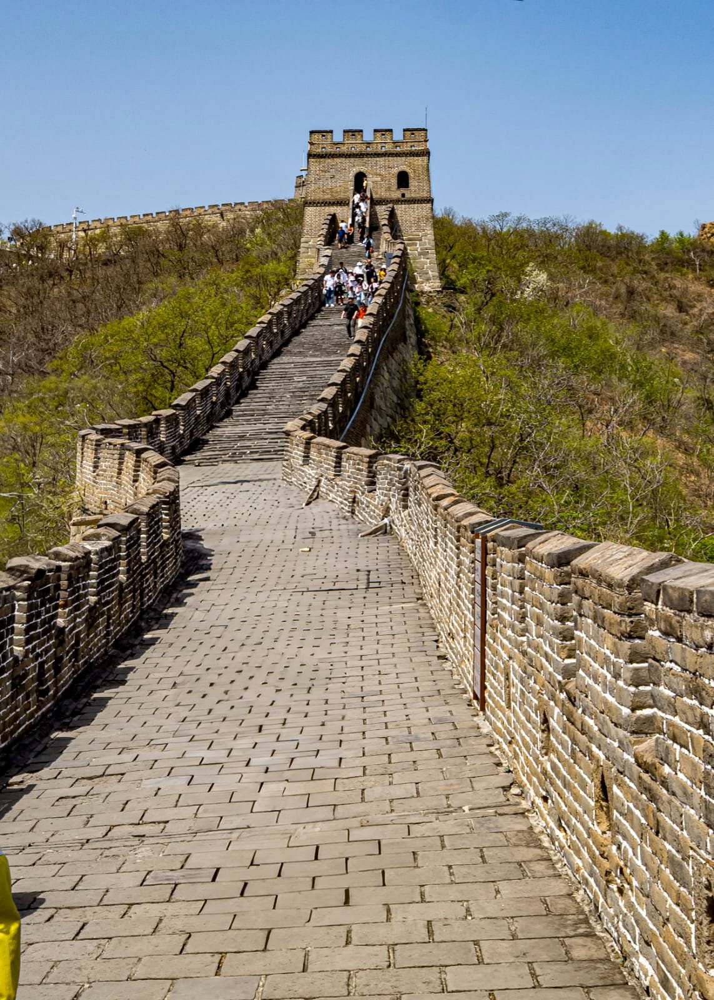

Il panda
Una delle immagini più immediate del viaggio: impossibile attraversare Chengdu senza portarsene dietro almeno una.
Un viaggio lungo e pieno di contrasti: skyline vertiginosi, città che sembrano non finire, storia millenaria, panda, mura, templi e notti accese di luce.

Hong Kong, Guilin, Shanghai, Zhouzhuang, Chengdu, Xi'an e Pechino: più che una linea sulla mappa, una successione continua di atmosfere. Le fotografie qui sotto non cercano di documentare tutto. Ho scelto quelle che, insieme, restituiscono meglio il carattere del viaggio.
Città immense viste dall'alto, tra fiumi, grattacieli e quartieri che sembrano proseguire fino all'orizzonte.



Una delle immagini più immediate del viaggio: impossibile attraversare Chengdu senza portarsene dietro almeno una.
Volti simili e tutti diversi, disposti in file che sembrano continuare molto oltre l'inquadratura.
Non solo monumenti: abiti, gesti, persone e piccoli frammenti di quotidianità che danno al viaggio una voce diversa.



Il Palazzo d'Estate tra i fiori e la Grande Muraglia: due immagini quasi opposte, ma entrambe capaci di riassumere la scala del viaggio.

Alla fine non resta una sola Cina, ma una sequenza di immagini che continuano a contraddirsi e completarsi.